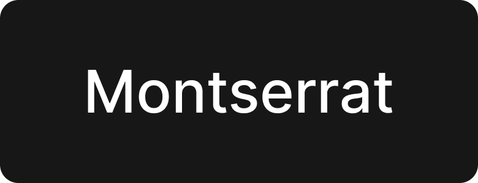
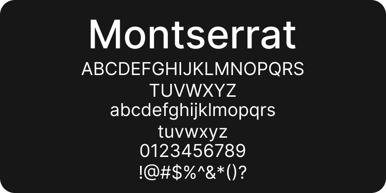
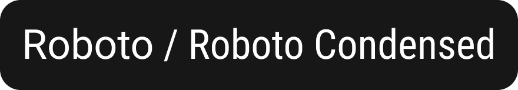
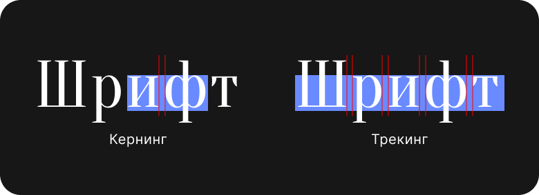
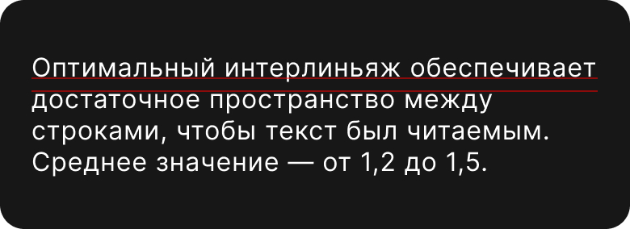
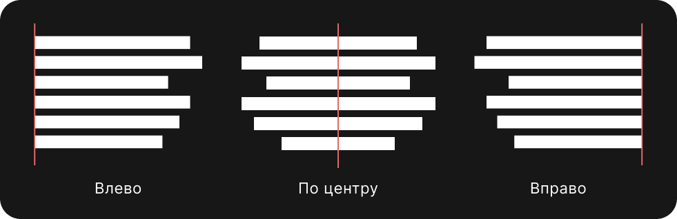

Фундамент дизайна
Типографика
Типографика в веб-дизайне — это не “красивые” шрифты, а правильная логика подачи текста. Правильная логика создаёт красоту.
Базовые термины
Гарнитура
Гарнитура — группа, к которой пренадлежит шрифт.

Шрифт
Шрифт — набор согласованных символов, имеющих единое стилистическое оформление, которые входят в состав гарнитуры.

Начертание шрифта
Начертание шрифта — толщина каждой буквы. Например: Regular, Bold, Italic, Bold Italic.
Ширина шрифта
Ширина шрифта — ширина каждой буквы. Сжатый (condensed), растянутый (extended).

Трекинг и кернинг
Трекинг — пространство между всеми буквами.
Кернинг — пространство между соседними буквами.

Интерлиньяж
Интерлиньяж — вертикальный интервал между строками текста.

Строчные и прописные
Строчные(маленькие) — буквы, которыми набирают основную часть текста.
Прописные — большие буквы.
Курсив
Курсив — лёгкий наклон букв вправо.
Выключка
Выключка — способ расположения строки относительно вертикальных границ полосы набора.

Стиль шрифта
Стиль шрифта — это набор характеристик, которые определяют визуальное оформление текста.
Он включает в себя:
1. Шрифт: основное оформление текста, например, Times New Roman, Arial, Helvetica и др.
2. Начертание: это разновидности шрифта, такие как обычный, полужирный (bold), курсив (italic) и подчеркнутый (underlined). Каждый из этих стилей может придавать тексту различные эмоциональные или функциональные акценты.
3. Размер шрифта: указывает, насколько крупный или мелкий будет текст.
4. Цвет шрифта: определяет цвет текста и может влиять на восприятие информации.
5. Интервал между строками (интерлиньяж): расстояние между базовыми линиями двух строк текста.
6. Интервал между буквами (tracking и kerning): расстояние между буквами в слове, которое может изменяться для улучшения читаемости или для создания визуальных эффектов.
7. Выравнивание текста(выключка): как текст размещен относительно страницы или области текста — по левому краю, по центру, по правому краю или по ширине.
Практика
Макет одностраничного сайта
Создай макет одностраничного сайта, посвященного любой выбранной тобой теме, с акцентом на использование различных элементов типографики.
Как выполнить?
1. Выбор темы. Определи тематику для твоего одностраничного сайта (например, личное портфолио, страница события, блог о хобби и т.д.).
2. Определение шрифтов. Выбери два контрастных типа шрифта: один для заголовков (должен быть более выразительным), другой для основного текста (читаемый и удобный). Запиши, какие шрифты ты выбрал, и объясни свой выбор.
3. Размеры шрифта. Определи размеры шрифта для различных элементов: заголовки, подзаголовки, основной текст, ссылки. Укажи размер в пикселях и сделай заметки о том, почему выбранные размеры улучшат читаемость.
4. Начертания и стили. Используй начертания: обычный, полужирный, курсив. Запланируй, где и как ты будешь их применять (например, полужирный для акцентов, курсив для цитат).
5. Интервал. Выбери значения для интервала между строками (интерлиньяж) и между буквами (tracking). Объясни, как эти интервализации влияют на читабельность текста.
6. Выравнивание. Определи выравнивание текста для различных секций (например, заголовки по центру, текст по левому краю). Обоснуй свой выбор.
7. Обратная связь. Покажи свой макет другим, собери отзывы о читаемости и привлекательности текста. Проанализируй полученные комментарии для улучшения своих навыков.